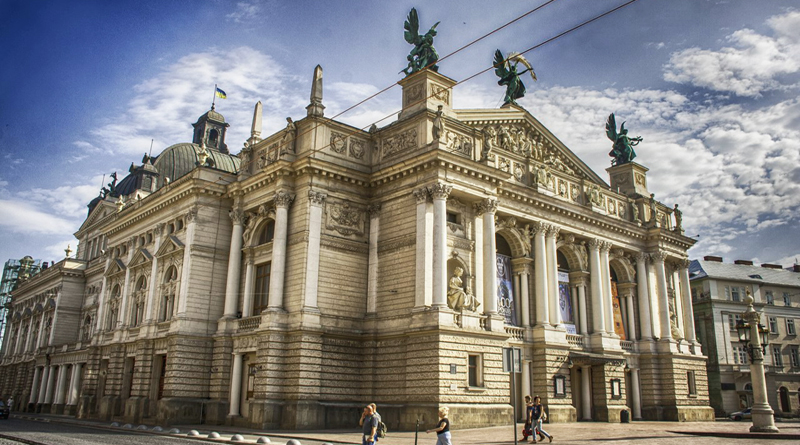
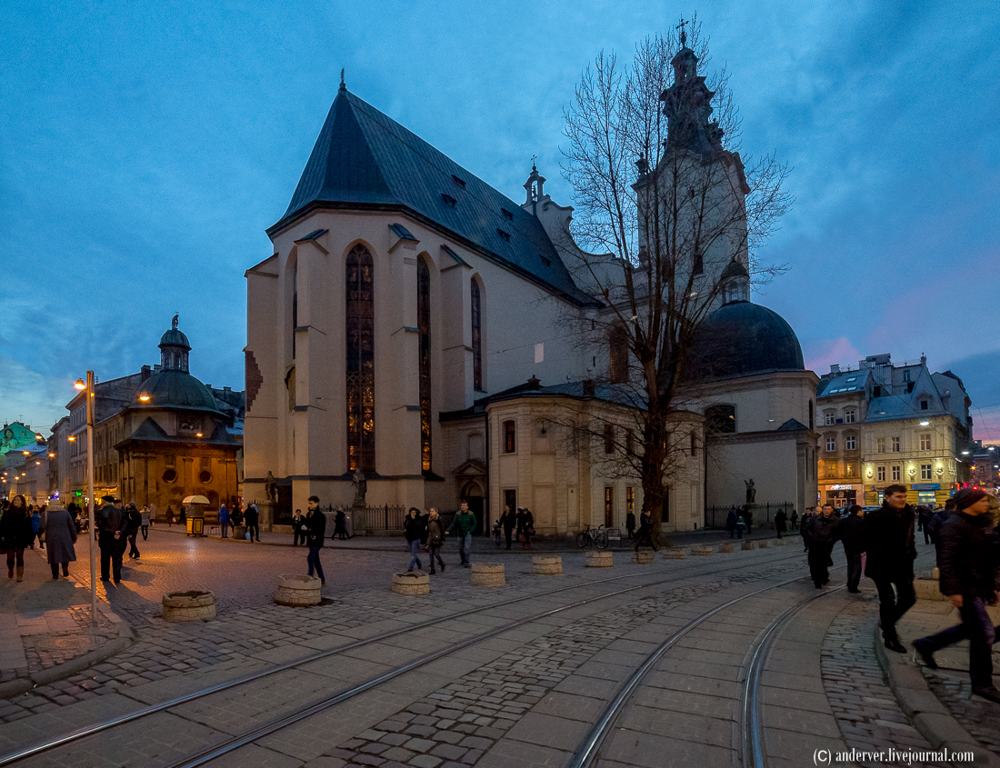

Львівська опера
Опера є однією з найбільш архітектурно виразних пам'яток Львова. Її витончене спорудження дивує жителів і гостей міста неймовірної розкішшю і досконалістю. Тут часто проходять оперети, опери та інші прем'єри.
Сьогодні в оперному театрі працюють понад 40 солістів, балетна трупа (60 артистів), хор (60 артистів), симфонічний оркестр (90 музикантів). Зараз у репертуарі театру 22 опери, 3 оперети та близько 20 балетів. Всі опери йдуть мовою оригіналу . Для зручності глядачів над сценою розміщене табло з рухомим рядком, що подає переклад змісту вистави українською мовою. У театрі проводиться міжнародний фестиваль оперного мистецтва імені Соломії Крушельницької.
Адреса: Львів, проспект Свободи, 1.
Як дістатися: з автовокзалу автобусом номер 3а.
Де поїсти: численні кафе і ресторани в центрі міста.
Де зупинитися: прилеглі готелі - хостел "Класик" (від 120 гривень).
Прекрасне місто Львів!



Кафедральний Латинський собор
Кафедральний Латинський собор - прекрасна споруда, що є головним католицьким храмом міста. Його головною архітектурною пам'яткою є сімдесятиметрового вежа, яка чимось нагадує величезний палець з каменю. Завершення вежі - чорний купол, який як наперсток додає ще більше подібностей. Це саме фотографоване спорудження у Львові.
Адреса: площа Соборна, 1.
Як дістатися: від автовокзалу автобусом №3а до центру Львова, а далі пішки.
Де поїсти: на Кафедральній, 6 знаходиться затишне кафе "Світ кави", в якому можна перекусити, випити чашечку кави і насолодитися прекрасними видами на Латинська катедра та його мальовничі споруди.
Де зупинитися: поруч з Латинським собором знаходиться розкішний готель Modern Art-hotel і недорогий хостел Cossacks Hostel.